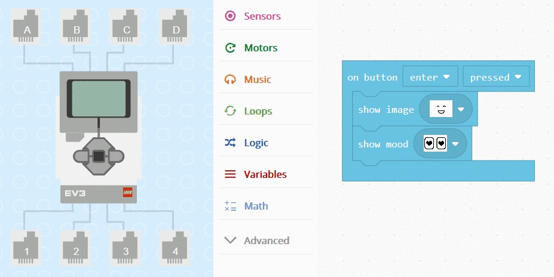
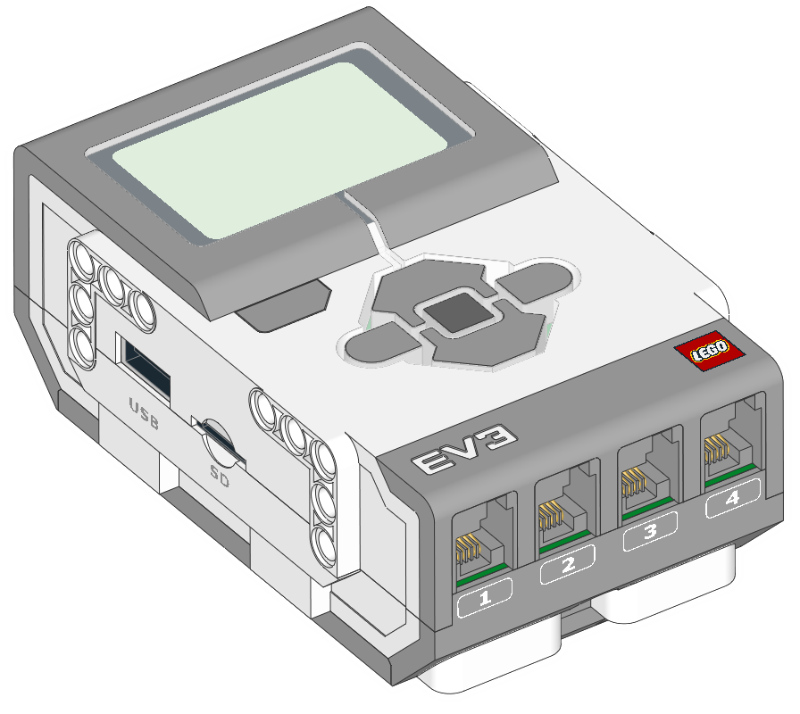
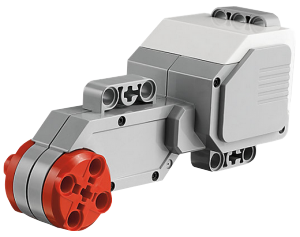
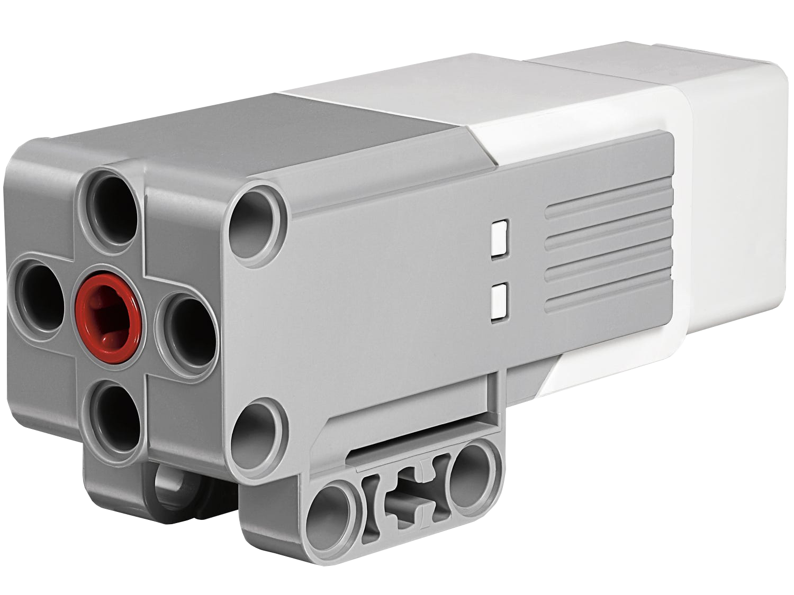
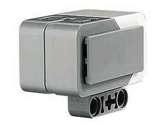
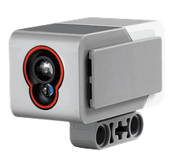
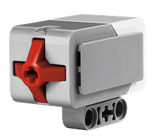

Lego Mindstorm Edication EV3 komplekts ir paredzets skoleniem ar un bez priekszinasanas robotika, sakot no 10 gadu vecuma.
no si komplekta iespejams izveidot neskaitamu skaitu robotu modelu.
Idejas ir brivi pieejamas interneta. robotikas skola 'ROBO HUB' Mindstorm EV3 tiek izmantots ka pamatkomplekts
robotikas nodarbibas, sakot no 3. klases. pamat kompleta ir viss, kas nepieciesams lai apgutu STEM un informacijas tehnologiju iemanas. Ta lietosana ir pieejama bezmaksas macibu materialu krajums skolotajiem un 3-macibu programmu.
e-macibu programma
programmesanai un dat vaksanai tiek izmantota bezmaksas vizuala LEGO Mindstorms Education EV3 programmatura
(Windows, MacOS, Chromebook un iOS)
programmatura ir veidota uz labview pamata (grafiskas programmesanas valoda, kas pielago izglitibas jomai).
EV3 komplekts satur:
klompekts kopa satur 541 dazadus elementus. LEGO Mindstorm Education EV3 acibu programma satur 48 rokasgramatas anglu valoda, kas palidz apgut programmesanas pamatus
EV3 minidators

Sis programmejamais intelligentais "kiegelis" kalpo LEGO Mindstorm EV3 robotu sirdi un smadzenem,
taja ir apgaismota sasu pogu saskare, kas maina krasu, lai noraditu mindatora aktivo stavokli,
augsta izskirtspeja melnbalts ekrans, iebuvets skalrunis, USB ports, mini SD krasu lasitajs.
Cetri ieejas un Cetri izejas porti.
Minidators atbalsta ari USD, Bluetooth, un Wi-Fi sakarus ar datoru,
un tam ir programmesanas saskare.
Tas ir saderigs ar mobilajam iericem, un to darbina AA beterijam
Minidatora parametri:

ARM 9 procesors ar linux operetajsistemu
Cetri ievades porti datu iegusanai(Lids 1000 paraugiem sekunde)
Cetri izeas porti komandu izpildei
Borta programmu kratuve ar 16 Mb atmina un 64 Mb RAM
Mini SDHC karsu lasitajs (Lidz 32Gb paplasinatai atminai)
apgaismots tris krasu interfeiss ar sesam pogam
Augstas izkirtspejas 178x178 pikseli
augsts klalitates skalrunis
sazinas iespejas starp datoru un citiem "kiegeliem"
Servomotori
Komplekts satur divus lielos un vienu videjo servermotoru.
Gan lielie, gan videjais servermotors ir aprikoti ar ieksejiem rotacijas sensoriem.
Rotacijas sensoru izmanto, lai izmeritu, cik talu motors ir pagriezies.
Rotajijas sensori var noteikt rotacijas daudzums grados vai pilnus pagriezienus.
Varat ari izmantot rotacijas sensoru, lai uzzinatu, kada jaudas limenis motors paslaik darbojas.

160-170 apgr./min
Darbibas grieziens moments 20N.cm
Apstasanai griezes moments 40 N.cm
Videja motora parametri:

240-250 apgr./min
Darbibas grieziens moments 8 N.cm
Apstasanas grieziens moments 12 N.cm
Ziroskops sensors
Ziroskopu sensors nosaka rotacijas kustibu plakne, ko norada biltinas sensora korpusa augpuse.
Sensors mera rotacijas atrumu grados sekunde un seko kopejam rotacijas lenkim grados.

Sensora parametri:
mera ar precizitati +/- 3 gradi
maksimala jauda ir 440 gradi sekunde
paraugu biezums 1kHz
Krasu sensori
Krasu sensors var noteikt gaismas krasu vai tas intesitati.
krasu sensoram ir tris dazadi rezimi: krasa, atstarotas gaismas intensitate un apkartejais gaismas intestitate.
Krāsa - šajā režīmā krāsu sensors var atšķirt līdz septiņām dažādām krāsām (melnu, zils, zaļu, dzeltenu, sarkanu, baltu, brūnu).
Atstarotā gaismas intensitāte - šajā režīmā krāsu sensors mēra gaismas daudzumu savā vidē, neradot savu gaismas avotu.
Apkārtējās gaismas intensitāti mēra procentos no 0 līdz 100, kur 0 ir ļoti tumšs un 100 ir ļoti spilgts
Apkārtējās gaismas intensitate - šajā režīmā krāsu sensors mēra gaismas daudzumu savā vidē, neradot savu gaismas avotu.
Apkārtējās gaismas intensitāti mēra procentos no 0 līdz 100, kur 0 ir ļoti tumšs un 100 ir ļoti spilgts.
Sensora parametri:

Mērījumi atspoguļo sarkano gaismu un apkārtējo gaismu, sākot no tumsas līdz ļoti spožai saules gaisma
Spēj noteikt septiņas krāsas
Paraugu biežums 1 kHz
Ultraskanas sensors
Ultraskaņas sensors mēra attālumu līdz objektam (maksimāli līdz 250 cm)
Tas tiek darīts, nosūtot augstas frekvences skaņas viļņus, kas atlec no jebkjura diapzonā esoša objekta, un mērot cik ilgi skaņai ir jāatgriežas pie sensora.
Programmatūra varat izvēlēties, vai attālums tiek norādits centimetros vai collās.
Ultraskanas sensoram ir arī režīms "tikai klausīties", kas var noteikt, vai kāds cits robots tuvumā izmanto ultraskaņas sensoru.
Šajā režīmā sensors klausās signālus, bet tos nesūta.
Sensora parametri:
Merisanas attalums no viena lidz 250 cm
precizitate lidz +/- 1 cm
Prieksejais apgaismojums izstarosanas laika ir nemainigs klausisanas laika mirgo
Atgriez vertibu true, ja tiek saklausita cita ultraskanas skana
Pieskariena sensors
Skarienjutigais sensors pieskir jusu robotam taustes sajutu.
Skarienjutigais sensors nosaka, kad tas tiek nospiests vai atlaists.
To pat var ieprogrammet, lai gaiditu, kamer tas tiek gan nospiests, gan atlaists.

Sensora parametri:
 Lego Mindstorm Edication EV3 komplekts ir paredzets skoleniem ar un bez priekszinasanas robotika, sakot no 10 gadu vecuma.
no si komplekta iespejams izveidot neskaitamu skaitu robotu modelu.
Idejas ir brivi pieejamas interneta. robotikas skola 'ROBO HUB' Mindstorm EV3 tiek izmantots ka pamatkomplekts
robotikas nodarbibas, sakot no 3. klases. pamat kompleta ir viss, kas nepieciesams lai apgutu STEM un informacijas tehnologiju iemanas. Ta lietosana ir pieejama bezmaksas macibu materialu krajums skolotajiem un 3-macibu programmu.
e-macibu programma
programmesanai un dat vaksanai tiek izmantota bezmaksas vizuala LEGO Mindstorms Education EV3 programmatura
(Windows, MacOS, Chromebook un iOS)
programmatura ir veidota uz labview pamata (grafiskas programmesanas valoda, kas pielago izglitibas jomai).
Lego Mindstorm Edication EV3 komplekts ir paredzets skoleniem ar un bez priekszinasanas robotika, sakot no 10 gadu vecuma.
no si komplekta iespejams izveidot neskaitamu skaitu robotu modelu.
Idejas ir brivi pieejamas interneta. robotikas skola 'ROBO HUB' Mindstorm EV3 tiek izmantots ka pamatkomplekts
robotikas nodarbibas, sakot no 3. klases. pamat kompleta ir viss, kas nepieciesams lai apgutu STEM un informacijas tehnologiju iemanas. Ta lietosana ir pieejama bezmaksas macibu materialu krajums skolotajiem un 3-macibu programmu.
e-macibu programma
programmesanai un dat vaksanai tiek izmantota bezmaksas vizuala LEGO Mindstorms Education EV3 programmatura
(Windows, MacOS, Chromebook un iOS)
programmatura ir veidota uz labview pamata (grafiskas programmesanas valoda, kas pielago izglitibas jomai).